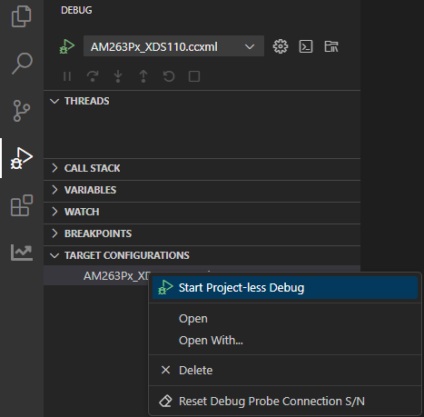

Alternate Method to Build and Run the examples
- Note
- These steps are optional.
Below method cab be used for running examples built with makefiles
SOC Initialization
Before any program can be loaded and run on the EVM, the SOC needs to be initialized. Below sections describes the various options available for SOC initialization.
SOC Initialization Using CCS Scripting
Set Environment Variable
- Note
- This step needs to be done once and is needed for the SOC initialization script
load_sbl.js to find certain initialization files within the SDK folder. This variable is not used otherwise in the build process. If you dont like adding variables in the environment, then you need to edit the file ${SDK_INSTALL_PATH}/tools/ccs_load/am263x/load_sbl.js and specify the SDK path in the file itself.
- Add path to the SDK folder as a environment variable in the host machine.
- In windows, goto "Windows Task Bar Search" and search for "environment variables for your account"

Environment Variables For Your Account
- Add a new variable named
MCU_PLUS_SDK_AM263X_PATH and point it to the path where the SDK is installed

Add New Environment Variable For Your Account
Run the SOC Initialization Script
AM263X-LP
- Attention
- This step needs to be done every time the AM263X-LP is power-cycled.
- POWER-OFF the AM263X-LP
- Make sure below cables are connected as shown in Cable Connections
- Set AM263X-LP in DEVBOOT mode as shown below

DEVBOOT MODE

Launch Target Configuration
- You will see the AM263X target configuration in the "Debug" window as shown below

Target Configuration After Launch
- Goto "CCS Toolbar > View > Scripting Console"
- Type the below command in the scripting console and press "enter", to load DMSC FW and initialize the SOC

Scripting Console
- In Linux, run the same command, only the path would be a Linux path like
/home/{username}/ti/mcu_plus_sdk_{soc}_{sdk version}/tools/ccs_load/am263x/load_sbl.js
- After successful execution of this script one would see logs as below
- In the scripting console, this is log from the script itself.

Scripting Console Log
- In case of success, there should be no error logs in the scripting console. The core will continue to run and the user can halt and reset the core.
- If the script is run without providing power to the AM263X-LP or if the AM263X-LP BOOTMODE is not set to DEVBOOT MODE then you will see errors in the console and/or unexpected behaviour and error messages.
- SOLUTION: Power cycle AM263X-LP and repeat the steps.
AM263X-CC
- Attention
- This step needs to be done every time the AM263X-CC is power-cycled.
- POWER-OFF the AM263X-CC
- Make sure below cables are connected as shown in Cable Connections
- Set AM263X-CC in DEVBOOT mode as shown below

DEVBOOT MODE
Launch Target Configuration
- You will see the AM263X target configuration in the "Debug" window as shown below
Target Configuration After Launch
- Goto "CCS Toolbar > View > Scripting Console"
- Type the below command in the scripting console and press "enter", to load DMSC FW and initialize the SOC
Scripting Console
- In Linux, run the same command, only the path would be a Linux path like
/home/{username}/ti/mcu_plus_sdk_{soc}_{sdk version}/tools/ccs_load/am263x/load_sbl.js
- After successful execution of this script one would see logs as below
- In the scripting console, this is log from the script itself.
Scripting Console Log
- In case of success, there should be no error logs in the scripting console. The core will continue to run and the user can halt and reset the core.
- If the script is run without providing power to the AM263X-CC or if the AM263X-CC BOOTMODE is not set to DEVBOOT MODE then you will see errors in the console and/or unexpected behaviour and error messages.
- SOLUTION: Power cycle AM263X-CC and repeat the steps.
SOC Initialization using the Binary Flashed in QSPI memory
AM263X-CC
The sbl_null is a secondary bootloader which doesn't load any application binary, but just does the SOC initialization and puts all the cores in WFI (Wait For Interrupt) mode.
- This is a recommended one time step that needs to be done before you can load and run programs via CCS
- If this step fails, maybe due to bad flash in EVM, then try one of the other SOC initialization steps mentioned at SOC Initialization
- This step needs to be done once unless the QSPI flash has been erased or some other application has been flashed
- A quick recap of steps done so far that are needed for the flashing to work
- Make sure the UART port used for terminal is identified as mentioned in Setup UART Terminal
- Make sure python3 is installed as mentioned in Python3
- Make sure you have the EVM power cable and UART cable connected as shown in Cable Connections
- POWER-OFF the EVM
- Set boot mode to UART BOOTMODE as shown in below image

UART BOOT MODE
- POWER-ON the EVM
- You should see character "C" getting printed on the UART terminal every 2-3 seconds as shown below

UART output in UART BOOT MODE
- Close the UART terminal as shown below. This is important, else the UART script in next step wont be able to connect to the UART port.

Close UART terminal

Flash in progress
- After all the flashing is done, you will see something like below

Flashing successful
- If flashing has failed, see Flash tool error messages and solutions, and resolve the errors.
- If flashing is successful, do the next steps ...
- POWER-OFF the EVM
- Switch the EVM boot mode to QSPI mode as shown below,

QSPI BOOT MODE
AM263X-LP
The sbl_null is a secondary bootloader which doesn't load any application binary, but just does the SOC initialization and puts all the cores in WFI (Wait For Interrupt) mode.
- This is a recommended one time step that needs to be done before you can load and run programs via CCS
- If this step fails, maybe due to bad flash in EVM, then try one of the other SOC initialization steps mentioned at SOC Initialization
- This step needs to be done once unless the QSPI flash has been erased or some other application has been flashed
- A quick recap of steps done so far that are needed for the flashing to work
- Make sure the UART port used for terminal is identified as mentioned in Setup UART Terminal
- Make sure python3 is installed as mentioned in Python3
- Make sure you have the EVM power cable and UART cable connected as shown in Cable Connections
- POWER-OFF the EVM
- Set boot mode to UART BOOTMODE as shown in below image

UART BOOT MODE
- POWER-ON the EVM
- You should see character "C" getting printed on the UART terminal every 2-3 seconds as shown below
UART output in UART BOOT MODE
- Close the UART terminal as shown below. This is important, else the UART script in next step wont be able to connect to the UART port.
Close UART terminal
Flash in progress
- After all the flashing is done, you will see something like below
Flashing successful
- If flashing has failed, see Flash tool error messages and solutions, and resolve the errors.
- If flashing is successful, do the next steps ...
- POWER-OFF the EVM
- Switch the EVM boot mode to QSPI mode as shown below,

QSPI BOOT MODE
Run the example
 1.8.20
1.8.20